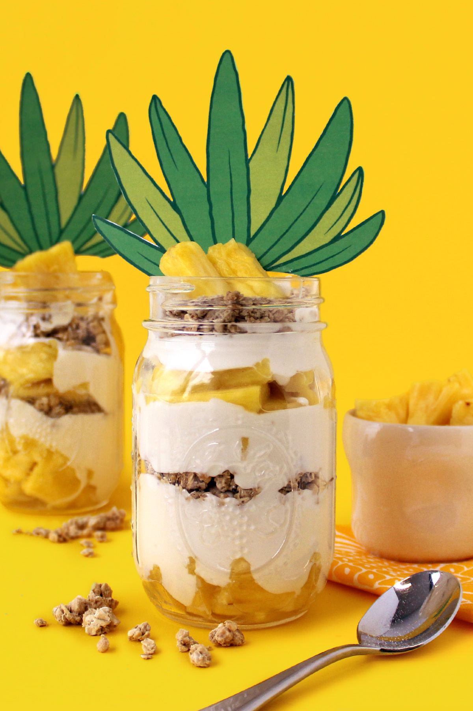

Pineapple Parfait Recipe

Make this scrumptious and healthy "under-the-sea" treat for breakfast or a snack
What lives in a mason jar, ends in your belly?
Pine-apple Par-fait!
That's right, this delicious recipe is as easy to assemble as it is nourishing.
Make it to start the school day off right, or make it for yourself, anytime!
Ingredients
- Mason jar
- Pineapple, cut into chunks
- Yogurt of your choice
- Broccoli
- Granola of your choice
- SpongeBob prinable pineapple fronds (print here!)
How to Make
-
Layer in a base of pineapple chunks, enough to coat the bottom of the jar. Using a spoon,
fill in a thick layer of yogurt, followed by a layer of granola. Repeat until filled to the top of the jar.
-
Print and cut out the pineapple fronds.
Tape to the lip of the container or attached to a toothpick and plant in the jar. Enjoy!